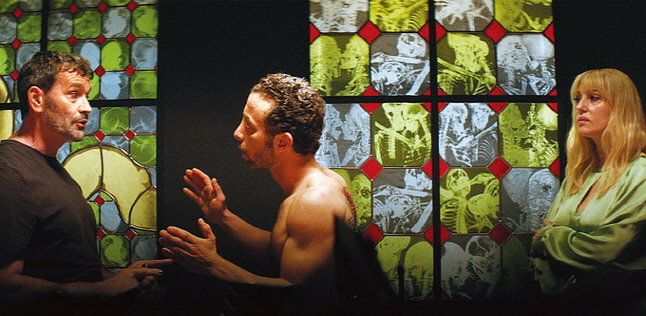
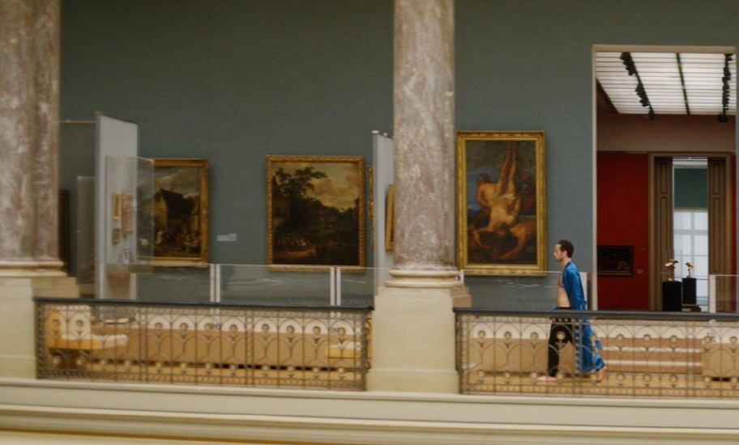

피부를 판 남자 (2021)
|
|

“예술품보다 못한 난민의 처지.” 2011년, 시리아 청년 샘(야흐야 마하이니)은 억압을 피해 레바논으로 도망친다. 궁핍한 하루하루를 살아가던 중, 한 갤러리에 음식을 훔쳐 먹으러 들어간 샘은 그곳에서 세계적인 예술가 제프리(코엔 드 보우)를 만난다. 샘의 사연을 알게 된 제프리는 그에게 등에 타투를 새겨 살아 있는 예술품으로 전시될 것을 제안한다. 유럽의 솅겐 비자를 등에 타투로 새긴 채 미술관에 전시된 샘은 세간의 이목을 집중시키고, 일등석과 5성급 호텔을 누리는 일약 스타가 된다. 그럼에도 자신이 바라던 것과 동떨어진 삶을 살고 있다고 느끼던 어느 날, 샘은 미술관에서 헤어진 연인 아비르(디아 리앤)와 마주친다. 벨기에의 예술가인 빔 델보예(Wim Delvoye)가 2008년에 스위스인 팀 스타이너(Tim Steiner)의 등에 타투를 새기는 방법으로 자신의 등을 살아있는 미술품으로 계약했다는 것은 사실이며, 이 실화가 이 작품의 모티프가 되었다. 
|
빔 델보예는 여러 논란을 일으킨 예술가로,
그 논쟁의 시작은 살아있는 돼지의 피부에 문신을 새긴 작업에서 비롯되었다.
이후 그는 이를 넘어 살아있는 사람의 등을 캔버스로 활용하는 작업을 했다.
영화는 실화를 그대로 재현하지는 않았다. 현실에서 그의 살아있는 작품은 스위스인이지만 영화에서는
주인공 샘을 시리아 난민으로 설정하여 관람객이 더 윤리적으로 깊이 생각해보게 장치했다.
영화에서 샘은 벨기에에 갈수 있다는 유혹에 이끌려 계약을 맺지만,
그 계약이 초래할 상황에 대해서 깊이 생각해 보지 않았다. 샘은 단순히 등을 내어주는 것으로 생각했지만,
전시회에서 사람들에게 등을 보이며 앉아 있어야 했고, 자신의 자유의지에 여러 제한을 받게 된다.
더군다나 이 작품(샘 자신)은 다른 수집가에게 팔리기도 했다.
빔 델보예는 이 내용을 영화화하는 것에 동의했으며, 영화에 카메오 출연하기도 했다.
샘의 등에 어느 나라든 입국할 수 있는 비자(사증)를 문신으로 새긴 제프리는 난민 문제를 폭로하며 예술의 위대함을 논한다.
살아 있는 사람의 등을 이용한 제프리의 작품은 사회적 파장을 일으킨다.
돈 많고 교양이 넘치는 부자들이 예술품이 돼서야 자유롭게 국경을 넘나들게 된 샘을 보기 위해 줄을 선다.
인권단체들은 난민을 착취하는 예술이라며 반대 시위를 벌이지만,
샘은 특급 호텔에서 캐비어를 먹으며 호화로운 생활을 기꺼워한다.
그러나 이런 만족과 무관하게 그의 등은 경매에 내걸리고 사물로 관리된 샘은 예술품에 딸린 부속품에 불과하다. 옛 연인과 함께 지낼 수도, 가족을 만날 수도 없던 그는 자신이 내준 것이 등짝만이 아니라는 사실을 깨닫게 된다. |

영화는 창틀 속 샘의 모습, 자신의 등을 액자에 비춰보는 장면 등을 통해
난민이라는 ‘프레임’에 갇혀 빠져나오지 못하는 샘의 처지를 은유한다. 그는 프레임을 벗어날 수 있을까. 영화 '피부를 판 남자'는 자신의 신체를 예술 작품으로 판 한 난민의 시선을 통해 자본주의 사회가 지닌 어두운 면을 도려내 전시한다. 사회 기득권층과 자본주의 사회에서 하층민에 속하는 이들 사이 자본의 차이는 모든 면에서 벽을 만들어낸다. 돈이 만들어낸 사회의 계급들은 그들이 벽을 기어오르지 못하게, 그들의 힘에 도전하지 못하게 만든다. 그 벽을 어떤 방식으로든 기어오르려는 샘조차 자신의 사람들에게 인정받지 못하고, 인권을 존중받지 못하는 모습은 현 대한민국 사회와도 다를 바 없다. '피부를 판 남자'가 도려내 전시한 것은 존엄성을 잃은 샘의 등이 아닌 자본주의 사회에 위치한 사각지대의 민낯 그 자체이지 않았을까. 결말부에 이르러 지나치게 교훈적인 이야기로 마무리 되는 것은 아쉽다. 영화 초반 샘에게 마법의 양탄자를 선물하는 지니가 될 수도, 영혼을 빼앗아가는 악마 메피스토펠레스가 될 수도 있었던 제프리는 마지막 장면에서 급히 지니로 선회한다. 기묘한 계약을 통해 샘에게 자유를 주고, 또 앗아갔던 그의 모습이 다양한 해석을 남기던 것을 떠올려 보면, 한가지 방향성으로 국한돼 정형화된 채 끝난 마무리에 답답함을 느끼게 된다. |